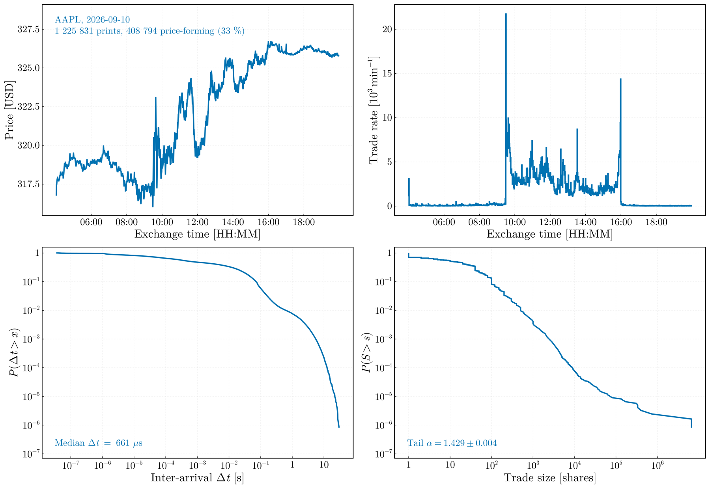

MarketTickStreamer
Provider-agnostic tick-by-tick market data acquisition in pure Julia: live WebSocket streaming, historical REST backfill, append-only raw persistence, compaction to analysis-ready files, and paced replay of recorded sessions.

One trading day of one symbol, as scripts/visualize.jl renders it. The inter-arrival distribution spans seven decades; the size distribution carries a fitted tail exponent.
Purpose
The package exists to supply a real-time data flux for testing time series analysis methods — waiting-time distributions, long-memory estimation, physics-informed models, criticality in tick arrival — on a stream whose statistics nobody controls. It therefore ends where analysis begins: it delivers ordered, deduplicated, provenance-tagged prints through a Channel{Trade} and a file layer, and implements no estimators of its own.
That boundary is deliberate. An acquisition layer that also computes is an acquisition layer whose numbers cannot be audited independently of the method under test.
Status
Validated against the live consolidated tape on 2026-08-06: a three-hour capture of 3.17 M prints across 24 symbols, 533 MB of raw NDJSON, with no duplicate, out-of-order or missing record. Per-symbol coverage was cross-checked against the historical SIP tape and matched exactly for 22 of 24 symbols, and to better than 99.9996 % for the remaining two — evidence that Alpaca's free delayed_sip feed carries the complete consolidated tape, merely 15 minutes late, which for offline science is no delay at all.
Installation
Requires Julia ≥ 1.12. The package is not registered; clone the repository for the full pipeline workflow (entry-point scripts, configuration, benchmarks, diagnostics), which is how it is meant to be used:
using Pkg
Pkg.activate(".")
Pkg.instantiate()Acquisition model
Three properties shape everything else:
- Crash-only. The raw layer is append-only NDJSON, one normalized
Tradeper line, flushed on a timer and a count. A killed process loses at most the unflushed tail; the next start reconciles the session sidecars. There is no shutdown path whose failure can lose data, because there is no shutdown path that must succeed. - Nanosecond integers. Timestamps are
Int64nanoseconds since the UNIX epoch from the wire to the file, never floating point, never a locale-dependent string. - One tape, two clocks. Every print carries both the exchange timestamp and the local receipt timestamp, so feed latency is measurable after the fact rather than assumed.
Where to go next
- Architecture — data flow, persistence layers, concurrency, failure handling, and the reasoning behind each dependency.
- Usage & Configuration — the entry points and every key of
config/config.toml. - Replay & Analysis Interfaces — how an external analysis pipeline consumes live or recorded ticks, and what is guaranteed about ordering, completion and backpressure.
- API reference — the public functions and types: acquisition and storage, analysis interfaces.